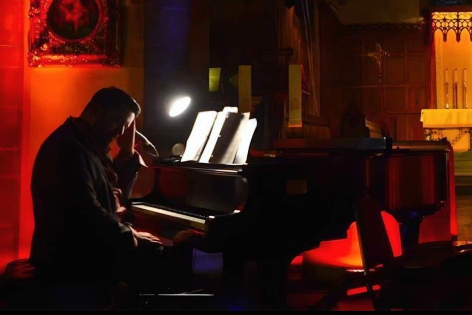

Music That Moves Mountains
Cory James Gallagher is a Tenor Vocalist. Amy Gallagher is a Writer-Poet.
Together, they blend their gifts to create inspiring "Musical-Poetic Journeys.'
About Concerts for the Soul
Concerts for the Soul is more than just a concert group, we're a movement to get in touch with our core and create positive change in the world. Concerts for the Soul is more than just a concert group, we're a movement to get in touch with our core and create positive change in the world.
Our Team
Cory Gallagher
Indie rock band with a passion for environmental activism
Amy Gallagher
Soul ensemble advocating for mental health awareness
Azure Gallagher
Soul ensemble advocating for mental health awareness
Support Our Cause
Your donation helps us organize more inspirational concerts and support our featured artists in their mission for change.
Donate NowConcerts for the Soul
Concerts for the Soul is more than just a concert group, we're a movement to get in touch with our core and create positive change in the world. Concerts for the Soul is more than just a concert group, we're a movement to get in touch with our core and create positive change in the world.
Alternate Style
Your donation helps us organize more inspirational concerts and support our featured artists in their mission for change.